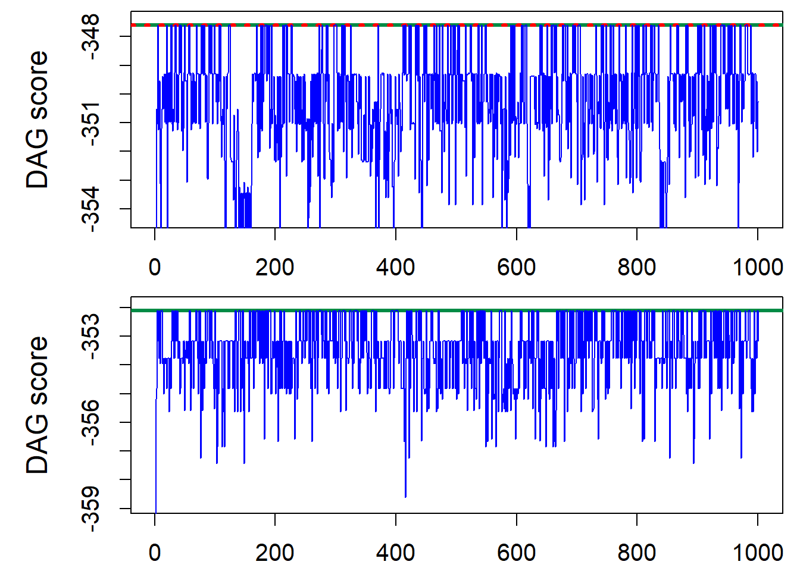

main function
# Choose the MCMC scheme
MCMCtype<-1 # 1 means standard structure, 2 with new edge reversal
# 3 means order MCMC, 4 means partition MCMC
# 5 means partition MCMC with new edge reversal
seedset<-1 # set a seed?
seednumbers<-100+c(1:2) # 101 and 102 are the values in the plots
seednumber<-seednumbers[1]
# Choose whether to save the plots to pdf
saveoutput<-1 # 1 means save
# load the necessary functions
path="C:/Shengtong/Research/PartitionMCMCDAG/PaperCode"
source(paste(path,'./edgerevandstructure/structurefns.R', sep=""))
source(paste(path,'./edgerevandstructure/structureMCMC.R', sep=""))
source(paste(path,'./edgerevandstructure/newedgerevfns.R', sep=""))
source(paste(path,'./edgerevandstructure/newedgerevmove.R', sep=""))
source(paste(path,'./orderandpartition/orderMCMC.R', sep=""))
source(paste(path,'./orderandpartition/orderfns.R', sep=""))
source(paste(path,'./orderandpartition/partitionMCMC.R', sep=""))
source(paste(path,'./orderandpartition/partitionmoves.R', sep=""))
source(paste(path,'./orderandpartition/partitionfns.R', sep=""))
source(paste(path,'./orderandpartition/samplefns.R', sep=""))
source(paste(path,'./scoring/combinations.R', sep=""))
source(paste(path,'./scoring/scorefns.R', sep=""))
source(paste(path,'./scoring/scoretables.R', sep=""))
# Here we use the BGe score
source(paste(path,'./scoring/bgescorefast.R', sep=""))
# Generate data and load score parameters
source(paste(path,'./initialisation/data5nodes.R', sep=""))
source(paste(path,'./initialisation/scoreparas.R', sep=""))data5nodes
set.seed(333)
N<-100 # Number of observations
### Example for the talk
# the commented out lines below would rescale the data at each step
x1 <- rnorm(N, mean=0, sd=sqrt(0.2))
#x1 <- (x1 - mean(x1))/sd(x1)
x3 <- rnorm(N, mean=0, sd=sqrt(0.2))
#x3 <- (x3 - mean(x3))/sd(x3)
x5 <- rnorm(N, mean=0, sd=sqrt(0.2))
#x5 <- (x5 - mean(x5))/sd(x5)
x4 <- 2*x3 + 2*x5 + rnorm(N, mean=0, sd=sqrt(0.2))
#x4 <- (x4 - mean(x4))/sd(x4)
x2 <- 2*x1 + 2*x3 + 2*x4 + 2*x5 + rnorm(N, mean=0, sd=sqrt(0.2))
#x2 <- (x2 - mean(x2))/sd(x2)
Data <- rbind(x1, x2, x3, x4, x5)
# Size of the problem
n <- nrow(Data) # number of nodes
N <- ncol(Data) # number of observations
# DAG data generated from
incidence<-matrix(0,n,n)
incidence[5,4]<-1 ######## offsprings in columns and parents in rows
incidence[5,2]<-1
incidence[4,2]<-1
incidence[3,4]<-1
incidence[3,2]<-1
incidence[1,2]<-1
# possible orders data generated from
realorderpermys<-list()
realorderpermys[[1]]<-c(2,4,1,3,5)
realorderpermys[[2]]<-c(2,4,1,5,3)
realorderpermys[[3]]<-c(2,4,3,1,5)
realorderpermys[[4]]<-c(2,4,3,5,1)
realorderpermys[[5]]<-c(2,4,5,1,3)
realorderpermys[[6]]<-c(2,4,5,3,1)
realorderpermys[[7]]<-c(2,1,4,3,5)
realorderpermys[[8]]<-c(2,1,4,5,3)
# permutation and partition data generated from
realpermy<-c(2,4,1,3,5)
realparty<-c(1,1,3)scoreparas
# scoring parameters
am<-1
aw<-n+am+1 # aw: degrees of freedom >n-1
mu0<-numeric(n)
T0scale <- am*(aw-n-1)/(am+1) # This follows from equations (19) and (20) of [GH2002]
T0<-diag(T0scale,n,n) # what is TO and TN?
TN <- T0 + (N-1)* cov(t(Data)) + ((am*N)/(am+N))* (mu0 - rowMeans(Data))%*%t(mu0 - rowMeans(Data))
awpN<-aw+N
constscorefact<- -(N/2)*log(pi) + (1/2)*log(am/(am+N))
scoreconstvec<-numeric(n)
for (j in 1:n){# j represents the number of parents plus 1
awp<-aw-n+j
scoreconstvec[j]<-constscorefact - lgamma(awp/2) + lgamma((awp+N)/2) + ((awp+j-1)/2)*log(T0scale)
}# Score of the DAG data generated from
realDAGlogscore<-sum(DAGnodescore(incidence, n, c(1:n)))
# Choose maximum number of parents
maxparents<-4 # Maximum number of parents to allow
starttime<-proc.time() # for timing the problem
# Fill up a matrix with possible parents
parenttable<-listpossibleparents(maxparents,c(1:n))
tablelength<-nrow(parenttable[[1]]) # size of the table
# Now need to score them!
scoretable<-scorepossibleparents(parenttable, n)
endtime<-proc.time()
endtime<-endtime-starttime
print('Time to initialise the score table')[1] "Time to initialise the score table"print(endtime) user system elapsed
0.08 0.00 0.12 scorepossibleparents
scorepossibleparents=function(parenttable,n){
listy<-vector("list",n)
for (j in 1:n){
scoretemp<-TableDAGscore(parenttable[[j]], j, n) # TableDAGscore is in scorefns.R
listy[[j]] <- as.matrix(scoretemp)
}
return(listy)
}TableDAGscore
TableDAGscore=function(parentrows, j, n){
nrows<-nrow(parentrows)
P_local <- numeric(nrows)
for (i in 1:nrows) {
parentnodes <- parentrows[i,which(parentrows[i,]>0)]
P_local[i]<-DAGcorescore(j,parentnodes,n) # DAGcorescore is in numedgescore.R
}
return(P_local)
}DAGcorescore
DAGcorescore=function(j,parentnodes,n){
lp<-length(parentnodes) #number of parents
awpNd2<-(awpN-n+lp+1)/2
A<-TN[j,j] ## what is TN?
switch(as.character(lp),
"0"={# just a single term if no parents
corescore <- scoreconstvec[lp+1] -awpNd2*log(A)
},
"1"={# no need for matrices
D<-TN[parentnodes,parentnodes]
logdetD<-log(D)
B<-TN[j,parentnodes]
logdetpart2<-log(A-B^2/D)
corescore <- scoreconstvec[lp+1]-awpNd2*logdetpart2 - logdetD/2
},
"2"={# can do matrix determinant and inverse explicitly
# but this is numerically unstable for large matrices!
D<-TN[parentnodes,parentnodes]
detD<-D[1,1]*D[2,2]-D[1,2]^2 #using symmetry of D
logdetD<-log(detD)
B<-TN[j,parentnodes]
logdetpart2<-log(A-(D[2,2]*B[1]^2+D[1,1]*B[2]^2-2*D[1,2]*B[1]*B[2])/detD) #also using symmetry of D
corescore <- scoreconstvec[lp+1]-awpNd2*logdetpart2 - logdetD/2
},
"3"={# can still do matrix determinants efficiently so we use other approach
# but the explicit formula is numerically unstable for large matrices!
D<-TN[parentnodes,parentnodes]
detD<-detthreebythree(D)
logdetD<-log(detD)
B<-TN[j,parentnodes]
logdetpart2<-log(detthreebythree(D-(B)%*%t(B)/A))+log(A)-logdetD
corescore <- scoreconstvec[lp+1]-awpNd2*logdetpart2 - logdetD/2
},
{# otherwise we use cholesky decomposition to perform both
D<-as.matrix(TN[parentnodes,parentnodes])
choltemp<-chol(D)
logdetD<-2*log(prod(choltemp[(lp+1)*c(0:(lp-1))+1]))
B<-TN[j,parentnodes]
logdetpart2<-log(A-sum(backsolve(choltemp,B,transpose=TRUE)^2))
corescore <- scoreconstvec[lp+1]-awpNd2*logdetpart2 - logdetD/2
})
}# Start the main part
switch(as.character(MCMCtype),
"1"={ # standard structure MCMC
iterations<-50000 #number of iterations in the chain
moveprobs<-c(1) # having length 1 disallows the new edge reversal move
if(!(length(moveprobs)==1)){print('Vector of move probabilities has the wrong length!')}
},
"2"={ # with new edge reversal
iterations<-40000 #number of iterations in the chain
# Choose the probability of the different moves
# 1 is standard structure MCMC (including the possibility to stay still [officially needed for convergence])
# 2 is new edge reversal move
moveprobs<-c(0.93,0.07)
moveprobs<-moveprobs/sum(moveprobs) # normalisation
if(!(length(moveprobs)==2)){print('Vector of move probabilities has the wrong length!')}
},
"3"={ # order MCMC
iterations<-20000 #number of iterations in the chain
# Choose the probability of the different moves
# 1 is swap any two elements
# 2 is to only swap adjacent elements
# 3 is to stay still (officially needed for convergence)
prob1<-99
if(n>3){ prob1<-round(6*99*n/(n^2+10*n-24)) }
prob1<-prob1/100
moveprobs<-c(prob1,0.99-prob1,0.01)
moveprobs<-moveprobs/sum(moveprobs) # normalisation
if(!(length(moveprobs)==3)){print('Vector of move probabilities has the wrong length!')}
# calculate score of orders compatible with the DAG that the data is generated from
realorderlogscores<-rep(0,length(realorderpermys))
for (j in 1:length(realorderpermys)){
realorderscores<-orderscore(n,c(1:n),parenttable,scoretable,realorderpermys[[j]])
realorderlogscores[j]<-sum(realorderscores$totscores) #log total score of all DAGs in the order
}
},
"4"={ # partition MCMC
iterations<-10000 #number of iterations in the chain
# Choose the probability of the different moves
# 1 is swap two nodes from different partition elements
# 2 is to only swap nodes from adjacent elements
# 3 is to split or join partition elements
# 4 is to move a single node
# 5 is to stay still (officially needed for convergence)
prob1start<-40/100
prob1<-prob1start*100
if(n>3){ prob1<-round(6*prob1*n/(n^2+10*n-24)) }
prob1<-prob1/100
prob2start<-99/100-prob1start
prob2<-prob2start*100
if(n>3){ prob2<-round(6*prob2*n/(n^2+10*n-24)) }
prob2<-prob2/100
moveprobs<-c(prob1,prob1start-prob1,prob2start-prob2,prob2,0.01)
moveprobs<-moveprobs/sum(moveprobs) # normalisation
if(!(length(moveprobs)==5)){print('Vector of move probabilities has the wrong length!')}
# calculate score of partition and permutation that the data is generated from
realposy<-parttolist(n,realparty)
realpartitionscores<-partitionscore(n,c(1:n),parenttable,scoretable,realpermy,realparty,realposy)
realpartitionlogscore<-sum(realpartitionscores$totscores) #log total score of all DAGs in the partition
},
"5"={ # partition MCMC with edge reversal
iterations<-9000 #number of iterations in the chain
# Choose the probability of the different moves
# 1 is swap two nodes from different partition elements
# 2 is to only swap nodes from adjacent elements
# 3 is to split or join partition elements
# 4 is to move a single node
# 5 is to stay still (officially needed for convergence)
# 6 is the new edge reversal
prob1start<-37/100
prob1<-prob1start*100
if(n>3){ prob1<-round(6*prob1*n/(n^2+10*n-24)) }
prob1<-prob1/100
prob2start<-92/100-prob1start
prob2<-prob2start*100
if(n>3){ prob2<-round(6*prob2*n/(n^2+10*n-24)) }
prob2<-prob2/100
moveprobs<-c(prob1,prob1start-prob1,prob2start-prob2,prob2,0.01,0.07)
moveprobs<-moveprobs/sum(moveprobs) # normalisation
if(!(length(moveprobs)==6)){print('Vector of move probabilities has the wrong length!')}
# calculate score of partition and permutation that the data is generated from
realposy<-parttolist(n,realparty)
realpartitionscores<-partitionscore(n,c(1:n),parenttable,scoretable,realpermy,realparty,realposy)
realpartitionlogscore<-sum(realpartitionscores$totscores) #log total score of all DAGs in the partition
},
{# if none is chosen, we have a problem
print('Not implemented')
}) ### end of switch # Plotting parameters
par(mfrow=c(2,1))
par(mar=c(2.5,5.75,0.5,0.75))
par(mgp=c(3.5,1.25,0))
par(cex.axis=1.25)
par(cex.lab=1.5)
stepsave<-iterations/1000 #how often to save the result
if(seedset>0){
set.seed(seednumber) # choose one?
}
if(MCMCtype<3){
startDAG<-matrix(numeric(n*n),nrow=n) # starting DAG is empty say
starttime<-proc.time() # for timing the problem
revallowed<-1 # allow standard edge reversals
example<-structureMCMC(n,startDAG,iterations,stepsave,maxparents,parenttable,scoretable,revallowed,moveprobs)
endtime<-proc.time()
endtime<-endtime-starttime
print('Time to run the')
print(iterations)
print('iterations')
print(endtime)
revallowed<-0 # don't allow edge reversals
if(seedset>0){
set.seed(seednumber)
}
startDAG<-matrix(numeric(n*n),nrow=n) # starting DAG is empty say
starttime<-proc.time() # for timing the problem
example2<-structureMCMC(n,startDAG,iterations,stepsave,maxparents,parenttable,scoretable,revallowed,moveprobs)
endtime<-proc.time()
endtime<-endtime-starttime
print('Time to run the')
print(iterations)
print('iterations')
print(endtime)
# Plot the results
nparts<-length(example[[2]])
maxDAGscore<-max(unlist(example[[2]]))
plot(1:nparts,example[[2]],type="l", ylab="DAG score", xlab="",#xlab="iteration step",
main="", col="blue",ylim=c(maxDAGscore-6.8,maxDAGscore+0.2))
abline(h=maxDAGscore,col='springgreen4', lwd=3)
abline(h=realDAGlogscore,col='red',lty=3,lwd=3)
lines(1:nparts,example[[2]],type="l", col="blue")
maxDAGscore2<-max(unlist(example2[[2]]))
plot(1:nparts,example2[[2]],type="l", ylab="DAG score", xlab="",#xlab="iteration step",
main="", col="blue",ylim=c(maxDAGscore2-6.8,maxDAGscore2+0.2))
abline(h=maxDAGscore2,col='springgreen4', lwd=3)
abline(h=realDAGlogscore,col='red',lty=3, lwd=3)
lines(1:nparts,example2[[2]],type="l", col="blue")
} else if (MCMCtype==3){
startorder<-c(1:n) # starting order
starttime<-proc.time() # for timing the problem
example<-orderMCMC(n,startorder,iterations,stepsave,parenttable,scoretable,moveprobs)
endtime<-proc.time()
endtime<-endtime-starttime
print('Time to run the')
print(iterations)
print('iterations')
print(endtime)
# Plot the results
nparts<-length(example[[2]])
maxorderscore<-max(unlist(example[[3]]))
maxDAGscore<-max(unlist(example[[2]]))
plot(1:nparts,example[[3]],type="l", ylab="Order score", xlab="",#xlab="iteration step",
main="", col="blue",ylim=c(maxorderscore-6.8,maxorderscore+0.2))
abline(h=maxorderscore,col='springgreen4', lwd=3)
abline(h=realorderlogscores,col='red',lty=3,lwd=3)
lines(1:nparts,example[[3]],type="l", col="blue")
plot(1:nparts,example[[2]],type="l", ylab="DAG score", xlab="",#xlab="iteration step",
main="", col="blue",ylim=c(maxDAGscore-6.8,maxDAGscore+0.2))
abline(h=maxDAGscore,col='springgreen4', lwd=3)
abline(h=realDAGlogscore,col='red',lty=3,lwd=3)
lines(1:nparts,example[[2]],type="l", col="blue")
} else if (MCMCtype>3){
startpermutation<-c(1:n) # pick a starting permutation
startpartition<-c(n) # and a starting partition - c(n) gives the empty DAG
starttime<-proc.time() # for timing the problem
example<-partitionMCMC(n,startpermutation,startpartition,iterations,stepsave,parenttable,scoretable,moveprobs)
endtime<-proc.time()
endtime<-endtime-starttime
print('Time to run the')
print(iterations)
print('iterations')
print(endtime)
# Plot the results
nparts<-length(example[[2]])
maxpartitionscore<-max(unlist(example[[3]]))
maxDAGscore<-max(unlist(example[[2]]))
plot(1:nparts,example[[3]],type="l", ylab="Partition score", xlab="",#xlab="iteration step",
main="", col="blue",ylim=c(maxpartitionscore-6.8,maxpartitionscore+0.2))
abline(h=maxpartitionscore,col='springgreen4', lwd=3)
abline(h=realpartitionlogscore,col='red',lty=3,lwd=3)
lines(1:nparts,example[[3]],type="l", col="blue")
plot(1:nparts,example[[2]],type="l", ylab="DAG score", xlab="",#xlab="iteration step",
main="", col="blue",ylim=c(maxDAGscore-6.8,maxDAGscore+0.2))
abline(h=maxDAGscore,col='springgreen4', lwd=3)
abline(h=realDAGlogscore,col='red',lty=3,lwd=3)
lines(1:nparts,example[[2]],type="l", col="blue")
}[1] "Time to run the"
[1] 50000
[1] "iterations"
user system elapsed
9.92 0.05 13.95
[1] "Time to run the"
[1] 50000
[1] "iterations"
user system elapsed
7.29 0.01 7.32 
if((saveoutput==1)&&(seedset==1)){
switch(as.character(MCMCtype),
"1"={ # standard structure MCMC
dev.copy(pdf,paste("./smallsimgraphs/structure5nodes",N,"its",iterations/1000,"seed",seednumber,".pdf",sep=""), width=7.5, height=7.5, onefile=F, pointsize=10, paper="special")
dev.off()
},
"2"={ # with new edge reversal
dev.copy(pdf,paste("./smallsimgraphs/edgerev5nodes",N,"one",100*moveprobs[1],"its",iterations/1000,"seed",seednumber,".pdf",sep=""), width=7.5, height=7.5, onefile=F, pointsize=10, paper="special")
dev.off()
},
"3"={ # order MCMC
dev.copy(pdf,paste("./smallsimgraphs/order5nodes",N,"one",100*moveprobs[1],"two",100*moveprobs[2],"its",iterations/1000,"seed",seednumber,".pdf",sep=""), width=7.5, height=7.5, onefile=F, pointsize=10, paper="special")
dev.off()
},
"4"={ # Partition MCMC
dev.copy(pdf,paste("./smallsimgraphs/partition5nodes",N,"one",100*moveprobs[1],"two",100*moveprobs[2],"three",100*moveprobs[3],"its",iterations/1000,"seed",seednumber,".pdf",sep=""), width=7.5, height=7.5, onefile=F, pointsize=10, paper="special")
dev.off()
},
"5"={ # Partition MCMC with edge reversal
dev.copy(pdf,paste("./smallsimgraphs/partitionedgerev5nodes",N,"one",100*moveprobs[1],"two",100*moveprobs[2],"three",100*moveprobs[3],"six",100*moveprobs[6],"its",iterations/1000,"seed",seednumber,".pdf",sep=""), width=7.5, height=7.5, onefile=F, pointsize=10, paper="special")
dev.off()
},
{# if none is chosen, we have a problem
print('Not implemented')
})
}
sessionInfo()R version 3.6.0 (2019-04-26)
Platform: x86_64-w64-mingw32/x64 (64-bit)
Running under: Windows 10 x64 (build 18363)
Matrix products: default
locale:
[1] LC_COLLATE=English_United States.1252
[2] LC_CTYPE=English_United States.1252
[3] LC_MONETARY=English_United States.1252
[4] LC_NUMERIC=C
[5] LC_TIME=English_United States.1252
attached base packages:
[1] stats graphics grDevices utils datasets methods base
loaded via a namespace (and not attached):
[1] workflowr_1.6.2 Rcpp_1.0.1 rprojroot_1.3-2 digest_0.6.19
[5] later_0.8.0 R6_2.4.1 backports_1.1.4 git2r_0.26.1
[9] magrittr_1.5 evaluate_0.13 stringi_1.4.3 fs_1.3.1
[13] promises_1.0.1 whisker_0.3-2 rmarkdown_1.13 tools_3.6.0
[17] stringr_1.4.0 glue_1.4.1 httpuv_1.5.1 xfun_0.20
[21] yaml_2.2.0 compiler_3.6.0 htmltools_0.3.6 knitr_1.23